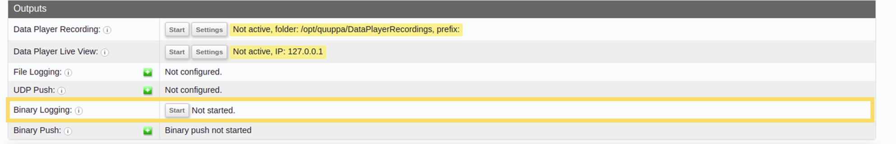
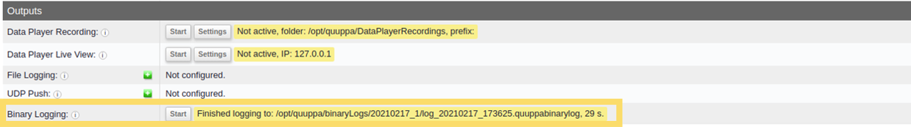

Outputs
The Outputs part of the Positioning Engine Web Console's status panel allows you to record QPE data, for example if you wanted to play data back using the Quuppa Data Player. By default, the QPE does not store or record any data, so it is important to use these recording features (or equivalent Quuppa APIs) if your use case requires recorded data.
This part of the Web Console also includes an option to start recording binary logs for the QPE. These binary logs can be used for troubleshooting any problems in your deployment. The QPE does not record binary logs by default but you can set it to record them as needed.
This section will go through the different output rows and how to use the action buttons associated with them (if applicable).
Data Player Recording
In order to view QPE data using the Quuppa Data Player application, you will need to set the QPE to record data. This row shows the status of that recording, the path to the directory where the recording will be saved and the prefix that will be used for the file name (the file name will be made up of the prefix and the time stamp of the recording). It also has a button for starting and stopping the recording.
- To start the recording, click on the Start button.
- To change the settings (i.e. target prefix) for the recording, click on the Settings button. This will open a window where you can enter the desired settings.
- To stop the recording, click the Stop button.
This section uses the Create output target and Control output target (start/stop) API methods.
Data Player Live View
The Quuppa Data Player application also has a Live View option, that works much the same way as with previously recorded data. This row shows the status of the recording and the IP address for where the live view can be accessed. It also has a button for starting and stopping the recording.
- To start the Live View recording, click on the Start button.
- To change the settings (i.e. the target IP address), click on the Settings button. This will open a window where you can enter the desired settings. Use 127.0.0.1 for the local machine.
- To stop using the feature, click on the Stop button.
This section uses the Create output target and Control output target (start/stop) API methods.
File Logging
The File Logging row shows the current logging configurations.
The logging configurations for the project file are set using the Quuppa Site Planner application, but you can also edit them here if needed by clicking on the add/edit configuration icon (the little green plus icon next to the row heading). This will open a new window where you can edit the configurations as needed.
A newly created target will not start automatically, but you can use the Start button that appears once the target has been created to start it.
This section uses the Create output target and Control output target (start/stop) API methods.
UDP Push
The UDP Push row shows the current UDP Push configurations
The logging configurations for the project file are set using the Quuppa Site Planner application, but you can also edit them here if needed by clicking on the add/edit configuration icon (the little green plus icon next to the row heading). This will open a new window where you can edit the configurations as needed.
This section uses the Create output target and Control output target (start/stop) API methods.
MQTT Publisher
The MQTT Publisher row shows current MQTT publisher configurations.
An alternative to plain UDP, you can also publish position data via MQTT. MQTT allows to create a reliable TCP-based connection to MQTT broker. You can also create MQTT over a websocket, for example if your QPE system is inside a firewall and only HTTP traffic outside is allowed.
For MQTT, Quuppa uses a v5 MQTT client and a predefined topic in the following
format:
quuppa/apidata/<project-key>/<payload|location|taginfo>/<format-name>/<tag-id>
Similar to UDP Push configuration, you can either create persistent MQTT output in the Site Planner or create them through the QPE user interface. The green plus icon next to the row heading opens a new window where you can edit the publisher configurations as needed.
This section uses the Create output target and Control output target (start/stop) API methods. For more details on creating and controlling targets over the API, see Quuppa API documentation.
Binary Logging
The binary logging tool is used to log all system data for debugging purposes.
To start recording binary logs, press the Start button. The QPE will continue to record binary logs until you click the Stop button. Depending on the project, this may result in a large file, so please check that you have enough disk space available before starting the recording. Once the recording has ended, the QPE will also show the path for where the log has been saved.

If you need help troubleshooting your deployment, the binary log data can be sent to Quuppa Support for analysis after recording. To do so, make a zip file of the directory containing the binary logs (i.e. the path shown by the web console) and send it to Quuppa. For more details, see the Record Binary Data for Quuppa Support section.
This section uses the Log Binary Data API method.
Binary Push
The binary push feature enables you to push raw data from this system to another QPE using UDP packets. This is useful for testing purposes, as you can use the real data from the production QPE on a test server with a different QPE, e.g. if you want to validate that a new QPE release is suitable for deployment in your live environment.
For more details on using this feature, please refer to the Push Binary Data section of this guide.